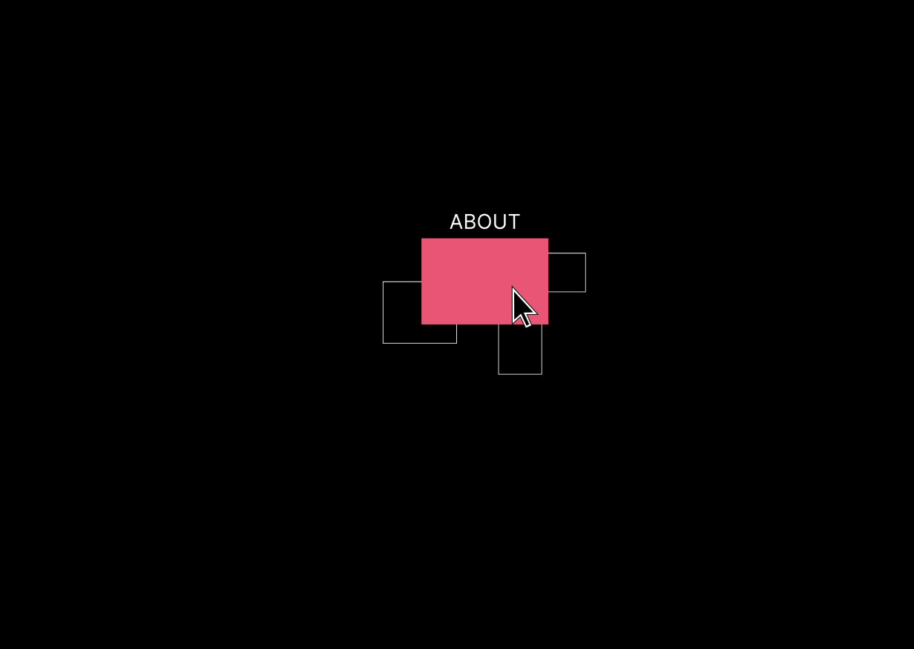
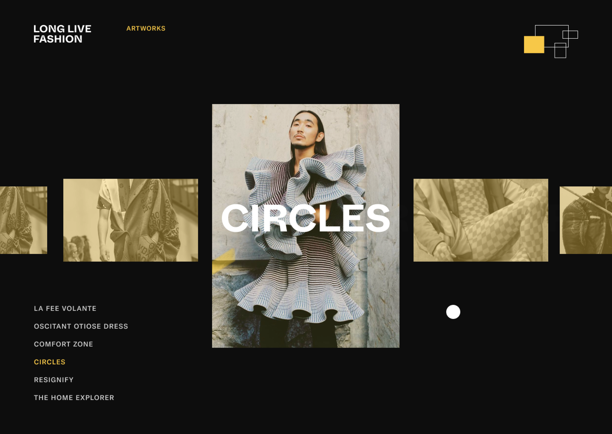
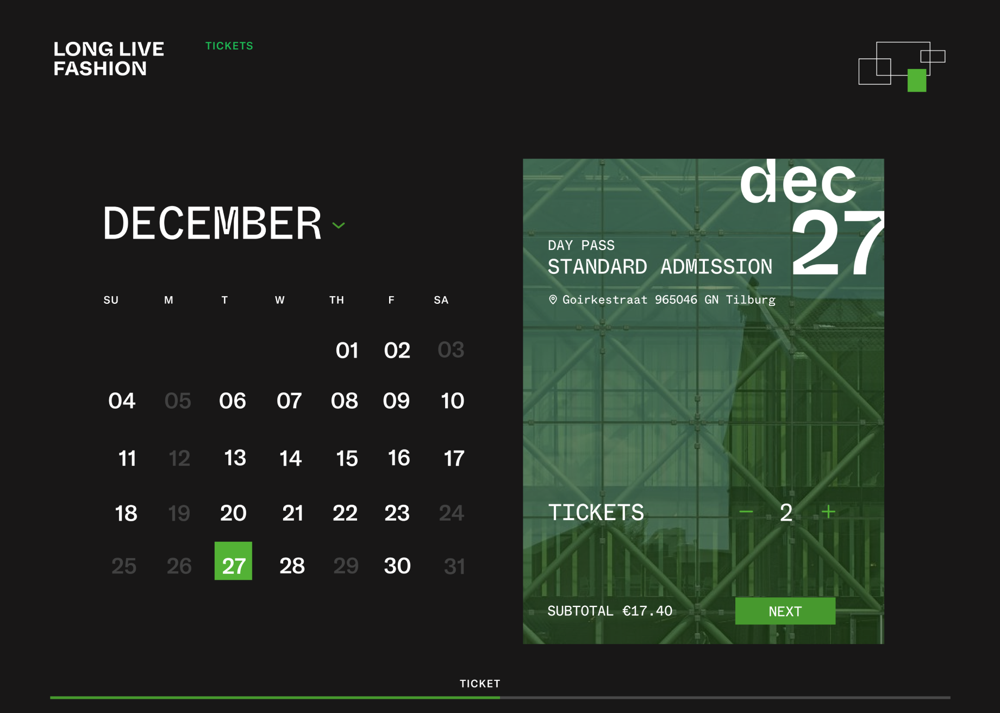
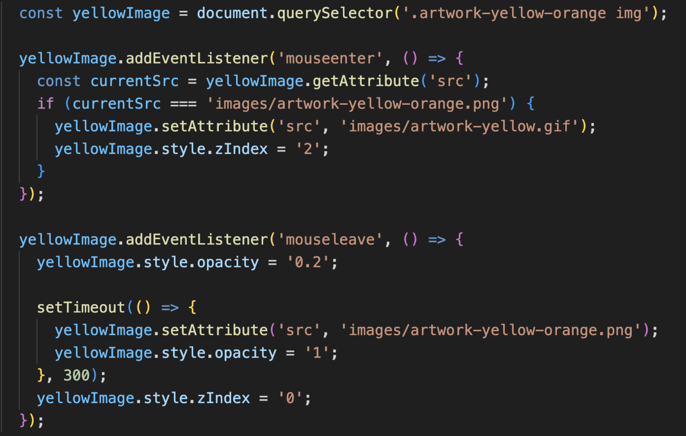

The navigation bar is the core of a website, featuring four
prominent color blocks: red, yellow, green, and blue, closely linked
to the theme of the "Long Live Fashion" event. Each color block
represents different content, providing users with a concise and
clear navigation method, allowing them to easily find the content
they are interested in.


My Contribution: Animation and Page Design with combination of Java script and gif image
What we are particularly proud of is the yellow page we designed, which is a place to showcase art
works. Here, the audience will discover a series of exquisite fashion artworks, and we have prepared
a detailed introduction for each one. My main contribution is to use different Java scripts to achieve
a combination of mouse animation and page animation.
In order to facilitate customers' participation in the "Long Live Fashion" event,
we have designed a green ticketing page. Here, you can choose the appropriate date
and time to easily purchase the tickets they want. Our concise and clear interface
and secure payment method will bring customers a pleasant ticketing experience.

In order to enhance the user experience, we have added some interactive
animation effects to the website. We achieved a smooth switching effect
between pages using HTML and JavaScript. By triggering different events,
such as clicking on different color blocks in the navigation bar, we can provide
users with a seamless page transition effect, making the entire browsing process
smoother and more enjoyable. At the same time, on the artwork page, we have also
added hover effects to each piece, allowing users to better understand the details
of the artwork.

In summary, our customized "Long Live Fashion" website for textielmuseum
is a perfect fusion of design, interaction, and user experience. From the
colors of the navigation bar to the animation effects of the page, every element
has been carefully designed to allow users to deeply understand the charm of fashion,
participate in activities, and leave beautiful memories. Our code implements smooth
animation for page switching, providing users with a smooth browsing experience.
Visit website

More Projects